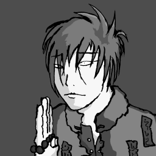
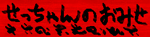

冥土のみやげにどうぞ。

せっちゃん：
『過去の黒板風トップ絵たちです。黒板の数はそのまま更新した数です。黒板スタイルは2003年から始めたのですが、当初は更新するたびに前のトップ絵を上書きしていたので、その頃のものはほとんど残っていません。ざんねん。』
せっちゃん：
『おさかなさんが高校のとき、春日総一さん、まるさんと描いていた謎の交換漫画です。まるさんが家から誰が描いたかわからない少女漫画を持ち出してきたのがきっかけのようです。後におけらさんが春日さんと短大で出会い、描き手に加わりました。』
せっちゃん：
『猫が魚を盗み食いするゲームです。ゲームだろうか。』
せっちゃん：
『大学の課題で、作ったゲームです。先生にシュールな作品だと言われました。１、２回やれば気が済むと思います。』
せっちゃん：
『ＰＣを持ってから作った曲、第１号です。楽しんでますね。意味は…まったく無いです。とにかくＰＣで自分たちの声が録音出来て、自由に再生出来るというのがたまらなく面白かったんでしょうね。使用ソフトはＢＭＳクリエイター。あと、ちょっとだけＰＳのデザエモン＋。』
せっちゃん：
『おさかなさんの後輩、トミータくんの作文です。おさかなさんが彼には負けたと言ってましたよ。』
せっちゃん：
『中学２年生の頃に書いていた漫画です。この部分には主人公であるヅラエモンこと斉藤久は出ていませんね。』
せっちゃん：
『中学２年生の頃に書いていた漫画です。漫☆画太郎せんせいの作風に相当影響を受けた時期で、絵にやたらと質感を出していますね。この頃からやっと絵に陰影をつける様になったんです。主人公であるヅラエモンこと斉藤久は１コマしか顔出てません。』
せっちゃん：
『中学３年生のときにリメイクしたヅラエモンです。漫☆画太郎せんせいの作風からちょっと離れたみたいです。』
せっちゃん：
『アイコンセットです。４つまとめて圧縮してあります。』